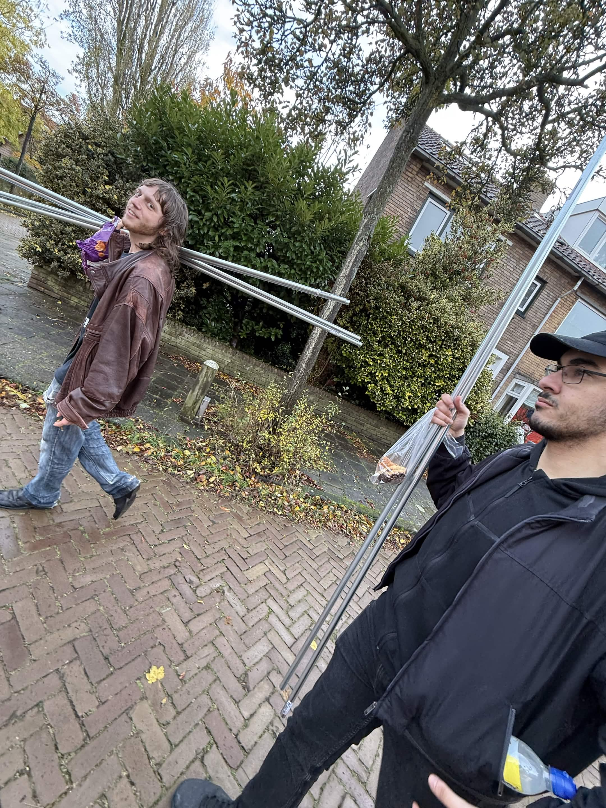
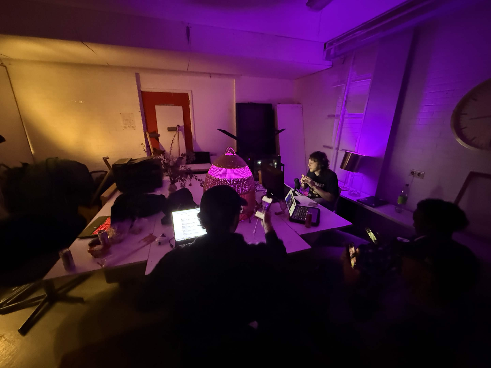
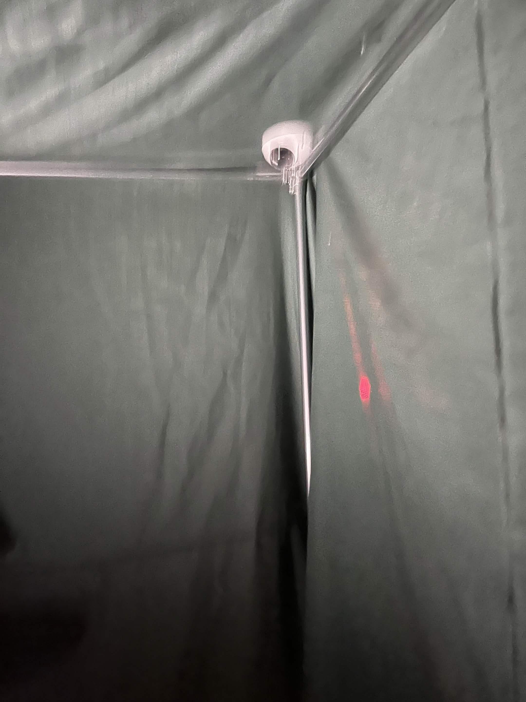

01 / WAT WE DEDEN
Verder bouwen aan de Deepfake Cinema
In sprint 3 hebben we verder gewerkt aan onze Deepfake Cinema. Het doel was om het prototype verder te ontwikkelen en ervoor te zorgen dat de verschillende onderdelen goed met elkaar samenwerken. We hebben zowel aan de video als aan de technische kant van het project gewerkt.
Samen met de groep hebben we de cinema opgebouwd. We hebben gekeken naar de opstelling en hoe bezoekers de ervaring zouden beleven. Daarnaast hebben we verder gewerkt aan de video en het deepfakeprogramma.


02 / MIJN BIJDRAGE
De video en vormgeving
Mijn belangrijkste bijdrage deze sprint was het verder uitwerken van de video. Ik heb alle videoclips geselecteerd die we wilden gebruiken en heb me beziggehouden met de vormgeving. Daarbij heb ik gekeken hoe de verschillende beelden het beste bij elkaar passen en hoe de video uiteindelijk één geheel kon worden.
Daarnaast heb ik samen met de rest van de groep de Deepfake Cinema opgebouwd. We hebben de verschillende onderdelen samengebracht om ervoor te zorgen dat de bezoeker de ervaring op de juiste manier kan beleven.

03 / TECHNISCHE ONTWIKKELING
Werken aan het deepfakeprogramma
Naast de video heb ik ook gewerkt aan het deepfakeprogramma. Dit onderdeel is nog niet helemaal af, maar ik ben bezig geweest met het verbeteren van de manier waarop de video wordt geladen.
Wat ik probeerde te bereiken, is dat de video permanent beschikbaar blijft in het programma. Hierdoor hoeft deze niet steeds opnieuw geladen te worden wanneer we het prototype gebruiken. Op die manier kunnen we tijd besparen en voorkomen dat we tijdens het testen of presenteren onnodig moeten wachten op het laden van de video.
Dit is een belangrijk onderdeel van de technische ontwikkeling, omdat we willen dat de ervaring zo soepel mogelijk verloopt voor de bezoeker.

04 / RESULTAAT EN REFLECTIE
Verder bouwen aan het prototype
Deze sprint hebben we een stap vooruit gezet met de Deepfake Cinema. De video heeft een duidelijkere vorm gekregen, de cinema is samen opgebouwd en ik heb verder gewerkt aan de technische werking van het deepfakeprogramma.
Het programma is nog niet helemaal af. Vooral het verbeteren van het laden en beschikbaar houden van de video is iets waar nog verder aan gewerkt moet worden. Ik heb deze sprint gemerkt dat niet alleen het eindresultaat belangrijk is, maar ook de technische details erachter. Een kleine vertraging kan namelijk invloed hebben op de hele ervaring van een bezoeker.
In de volgende sprint wil ik me verder richten op het afronden en testen van het programma, zodat de Deepfake Cinema zo goed mogelijk werkt.